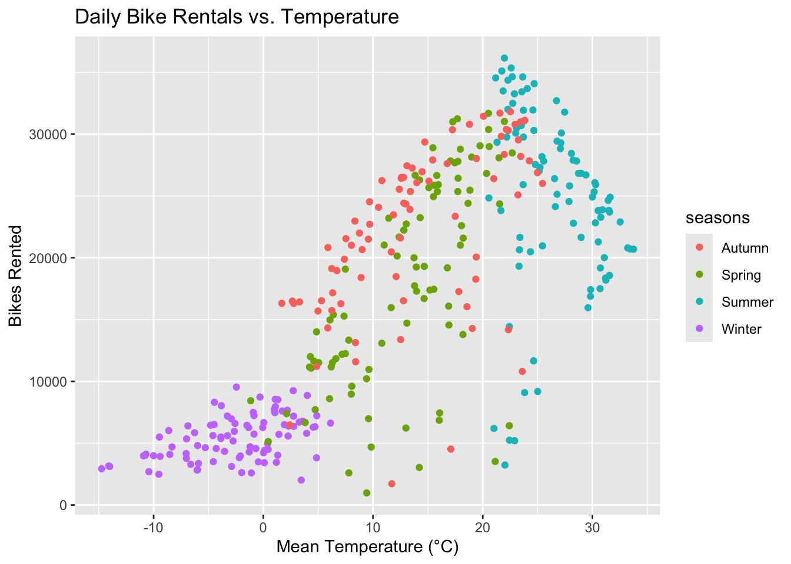
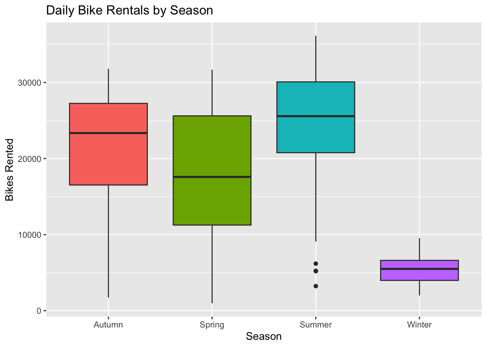
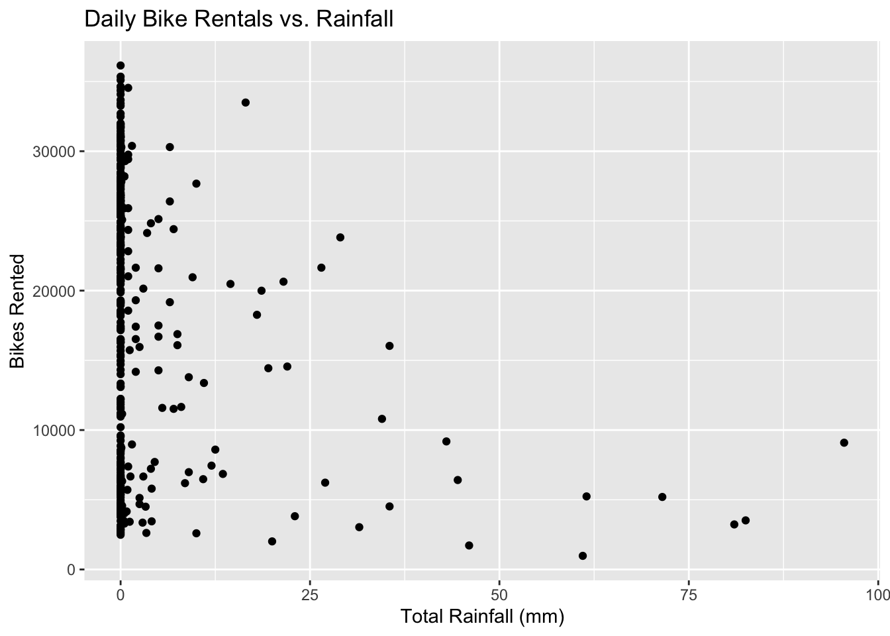
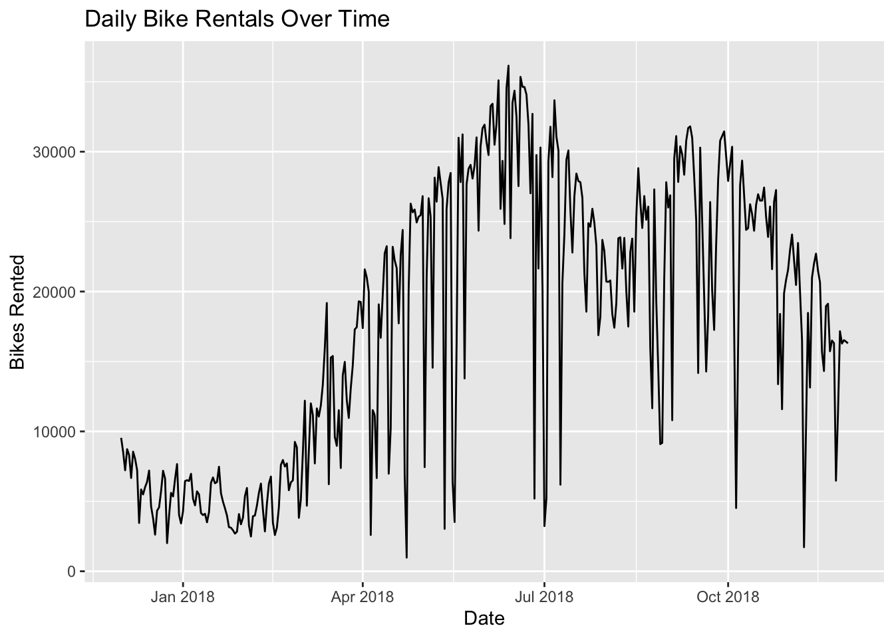

library(tidyverse)
library(lubridate)
library(rsample)ST558_HW9_Will
Reading the Data
The degree symbols in the column names (like Temperature(°C)) cause read_csv() to throw invalid multibyte string. The encoding is set in locale() to fix this.
bike_raw <- read_csv(
"SeoulBikeData.csv",
locale = locale(encoding = "latin1")
)Rows: 8760 Columns: 14
── Column specification ────────────────────────────────────────────────────────
Delimiter: ","
chr (4): Date, Seasons, Holiday, Functioning Day
dbl (10): Rented Bike Count, Hour, Temperature(°C), Humidity(%), Wind speed ...
ℹ Use `spec()` to retrieve the full column specification for this data.
ℹ Specify the column types or set `show_col_types = FALSE` to quiet this message.bike_raw# A tibble: 8,760 × 14
Date `Rented Bike Count` Hour `Temperature(°C)` `Humidity(%)`
<chr> <dbl> <dbl> <dbl> <dbl>
1 01/12/2017 254 0 -5.2 37
2 01/12/2017 204 1 -5.5 38
3 01/12/2017 173 2 -6 39
4 01/12/2017 107 3 -6.2 40
5 01/12/2017 78 4 -6 36
6 01/12/2017 100 5 -6.4 37
7 01/12/2017 181 6 -6.6 35
8 01/12/2017 460 7 -7.4 38
9 01/12/2017 930 8 -7.6 37
10 01/12/2017 490 9 -6.5 27
# ℹ 8,750 more rows
# ℹ 9 more variables: `Wind speed (m/s)` <dbl>, `Visibility (10m)` <dbl>,
# `Dew point temperature(°C)` <dbl>, `Solar Radiation (MJ/m2)` <dbl>,
# `Rainfall(mm)` <dbl>, `Snowfall (cm)` <dbl>, Seasons <chr>, Holiday <chr>,
# `Functioning Day` <chr>EDA
Checking the Data
1. missing data
First, check each column for missing values.
colSums(is.na(bike_raw)) Date Rented Bike Count Hour
0 0 0
Temperature(°C) Humidity(%) Wind speed (m/s)
0 0 0
Visibility (10m) Dew point temperature(°C) Solar Radiation (MJ/m2)
0 0 0
Rainfall(mm) Snowfall (cm) Seasons
0 0 0
Holiday Functioning Day
0 0 The columns are not missing any values.
2. column types and values
Next, check that the column types make sense.
glimpse(bike_raw)Rows: 8,760
Columns: 14
$ Date <chr> "01/12/2017", "01/12/2017", "01/12/2017", …
$ `Rented Bike Count` <dbl> 254, 204, 173, 107, 78, 100, 181, 460, 930…
$ Hour <dbl> 0, 1, 2, 3, 4, 5, 6, 7, 8, 9, 10, 11, 12, …
$ `Temperature(°C)` <dbl> -5.2, -5.5, -6.0, -6.2, -6.0, -6.4, -6.6, …
$ `Humidity(%)` <dbl> 37, 38, 39, 40, 36, 37, 35, 38, 37, 27, 24…
$ `Wind speed (m/s)` <dbl> 2.2, 0.8, 1.0, 0.9, 2.3, 1.5, 1.3, 0.9, 1.…
$ `Visibility (10m)` <dbl> 2000, 2000, 2000, 2000, 2000, 2000, 2000, …
$ `Dew point temperature(°C)` <dbl> -17.6, -17.6, -17.7, -17.6, -18.6, -18.7, …
$ `Solar Radiation (MJ/m2)` <dbl> 0.00, 0.00, 0.00, 0.00, 0.00, 0.00, 0.00, …
$ `Rainfall(mm)` <dbl> 0, 0, 0, 0, 0, 0, 0, 0, 0, 0, 0, 0, 0, 0, …
$ `Snowfall (cm)` <dbl> 0, 0, 0, 0, 0, 0, 0, 0, 0, 0, 0, 0, 0, 0, …
$ Seasons <chr> "Winter", "Winter", "Winter", "Winter", "W…
$ Holiday <chr> "No Holiday", "No Holiday", "No Holiday", …
$ `Functioning Day` <chr> "Yes", "Yes", "Yes", "Yes", "Yes", "Yes", …Basic summary statistics for the numeric columns:
bike_raw |>
select(where(is.numeric)) |>
summary() Rented Bike Count Hour Temperature(°C) Humidity(%)
Min. : 0.0 Min. : 0.00 Min. :-17.80 Min. : 0.00
1st Qu.: 191.0 1st Qu.: 5.75 1st Qu.: 3.50 1st Qu.:42.00
Median : 504.5 Median :11.50 Median : 13.70 Median :57.00
Mean : 704.6 Mean :11.50 Mean : 12.88 Mean :58.23
3rd Qu.:1065.2 3rd Qu.:17.25 3rd Qu.: 22.50 3rd Qu.:74.00
Max. :3556.0 Max. :23.00 Max. : 39.40 Max. :98.00
Wind speed (m/s) Visibility (10m) Dew point temperature(°C)
Min. :0.000 Min. : 27 Min. :-30.600
1st Qu.:0.900 1st Qu.: 940 1st Qu.: -4.700
Median :1.500 Median :1698 Median : 5.100
Mean :1.725 Mean :1437 Mean : 4.074
3rd Qu.:2.300 3rd Qu.:2000 3rd Qu.: 14.800
Max. :7.400 Max. :2000 Max. : 27.200
Solar Radiation (MJ/m2) Rainfall(mm) Snowfall (cm)
Min. :0.0000 Min. : 0.0000 Min. :0.00000
1st Qu.:0.0000 1st Qu.: 0.0000 1st Qu.:0.00000
Median :0.0100 Median : 0.0000 Median :0.00000
Mean :0.5691 Mean : 0.1487 Mean :0.07507
3rd Qu.:0.9300 3rd Qu.: 0.0000 3rd Qu.:0.00000
Max. :3.5200 Max. :35.0000 Max. :8.80000 The ranges look valid. Humidity is between 0 and 98%, hours run from 0 to 23 (hour beginning), and rainfall, snowfall, and bike counts are not negative.
Unique values of the categorical columns:
bike_raw |>
select(where(is.character), -Date) |>
map(unique)$Seasons
[1] "Winter" "Spring" "Summer" "Autumn"
$Holiday
[1] "No Holiday" "Holiday"
$`Functioning Day`
[1] "Yes" "No" 3. convert the date
Date was read in as a character, so it needs to be converted. The dates are in day/month/year format, so we use dmy() from lubridate.
bike_raw <- bike_raw |>
mutate(Date = dmy(Date))
range(bike_raw$Date)[1] "2017-12-01" "2018-11-30"The data covers one year, from December 2017 through November 2018.
4. convert character variables to factors
bike_raw <- bike_raw |>
mutate(across(c(Seasons, Holiday, `Functioning Day`), as.factor))5. rename the variables
Rename everything to lower snake case so columns are standard formatting. The original names contain the degree symbol which can cause encoding problems. Replace all the names.
bike_data <- bike_raw
names(bike_data) <- c("date", "bike_count", "hour", "temp", "humidity",
"wind_speed", "visibility", "dew_point_temp",
"solar_radiation", "rainfall", "snowfall",
"seasons", "holiday", "functioning_day")
names(bike_data) [1] "date" "bike_count" "hour" "temp"
[5] "humidity" "wind_speed" "visibility" "dew_point_temp"
[9] "solar_radiation" "rainfall" "snowfall" "seasons"
[13] "holiday" "functioning_day"6. summary statistics
Summarize bike rental counts across each categorical variable.
bike_data |>
group_by(seasons) |>
summarize(
n = n(),
mean = mean(bike_count),
median = median(bike_count),
sd = sd(bike_count),
min = min(bike_count),
max = max(bike_count)
)# A tibble: 4 × 7
seasons n mean median sd min max
<fct> <int> <dbl> <dbl> <dbl> <dbl> <dbl>
1 Autumn 2184 820. 764. 651. 0 3298
2 Spring 2208 730. 583 622. 0 3251
3 Summer 2208 1034. 906. 690. 9 3556
4 Winter 2160 226. 203 150. 3 937bike_data |>
group_by(holiday) |>
summarize(
n = n(),
mean = mean(bike_count),
median = median(bike_count),
sd = sd(bike_count),
min = min(bike_count),
max = max(bike_count)
)# A tibble: 2 × 7
holiday n mean median sd min max
<fct> <int> <dbl> <dbl> <dbl> <dbl> <dbl>
1 Holiday 432 500. 240 571. 0 2400
2 No Holiday 8328 715. 524. 647. 0 3556bike_data |>
group_by(functioning_day) |>
summarize(
n = n(),
mean = mean(bike_count),
median = median(bike_count),
sd = sd(bike_count),
min = min(bike_count),
max = max(bike_count)
)# A tibble: 2 × 7
functioning_day n mean median sd min max
<fct> <int> <dbl> <dbl> <dbl> <dbl> <dbl>
1 No 295 0 0 0 0 0
2 Yes 8465 729. 542 642. 2 3556When functioning_day is No, the bike count is always 0. No bikes are rented when the system is not functioning. These rows tell us nothing about demand, so we drop them and keep only functioning hours.
bike_data <- bike_data |>
filter(functioning_day == "Yes") |>
select(-functioning_day)
nrow(bike_data)[1] 84657. summarize across hours
We collapse the hourly data to one row per day. Bike count, rainfall, and snowfall are summed across the day. The other weather variables are averaged.
bike_daily <- bike_data |>
group_by(date, seasons, holiday) |>
summarize(
bike_count = sum(bike_count),
rainfall = sum(rainfall),
snowfall = sum(snowfall),
temp = mean(temp),
humidity = mean(humidity),
wind_speed = mean(wind_speed),
visibility = mean(visibility),
dew_point_temp = mean(dew_point_temp),
solar_radiation = mean(solar_radiation),
.groups = "drop"
)
bike_daily# A tibble: 353 × 12
date seasons holiday bike_count rainfall snowfall temp humidity
<date> <fct> <fct> <dbl> <dbl> <dbl> <dbl> <dbl>
1 2017-12-01 Winter No Holiday 9539 0 0 -2.45 45.9
2 2017-12-02 Winter No Holiday 8523 0 0 1.33 62.0
3 2017-12-03 Winter No Holiday 7222 4 0 4.88 81.5
4 2017-12-04 Winter No Holiday 8729 0.1 0 -0.304 52.5
5 2017-12-05 Winter No Holiday 8307 0 0 -4.46 36.4
6 2017-12-06 Winter No Holiday 6669 1.3 8.6 0.0458 70.8
7 2017-12-07 Winter No Holiday 8549 0 10.4 1.09 67.5
8 2017-12-08 Winter No Holiday 8032 0 0 -3.82 41.8
9 2017-12-09 Winter No Holiday 7233 0 0 -0.846 46
10 2017-12-10 Winter No Holiday 3453 4.1 32.5 1.19 69.7
# ℹ 343 more rows
# ℹ 4 more variables: wind_speed <dbl>, visibility <dbl>, dew_point_temp <dbl>,
# solar_radiation <dbl>The daily data has 353 days.
8. summaries and plots on the daily data
Recreate the summary statistics on the daily data.
bike_daily |>
select(where(is.numeric)) |>
summary() bike_count rainfall snowfall temp
Min. : 977 Min. : 0.000 Min. : 0.000 Min. :-14.738
1st Qu.: 6967 1st Qu.: 0.000 1st Qu.: 0.000 1st Qu.: 3.304
Median :18563 Median : 0.000 Median : 0.000 Median : 13.738
Mean :17485 Mean : 3.576 Mean : 1.863 Mean : 12.776
3rd Qu.:26285 3rd Qu.: 0.500 3rd Qu.: 0.000 3rd Qu.: 22.592
Max. :36149 Max. :95.500 Max. :78.700 Max. : 33.742
humidity wind_speed visibility dew_point_temp
Min. :22.25 Min. :0.6625 Min. : 214.3 Min. :-27.750
1st Qu.:47.58 1st Qu.:1.3042 1st Qu.:1087.0 1st Qu.: -5.188
Median :57.17 Median :1.6583 Median :1557.8 Median : 4.612
Mean :58.17 Mean :1.7261 Mean :1434.0 Mean : 3.954
3rd Qu.:67.71 3rd Qu.:1.9542 3rd Qu.:1874.3 3rd Qu.: 14.921
Max. :95.88 Max. :4.0000 Max. :2000.0 Max. : 25.038
solar_radiation
Min. :0.02917
1st Qu.:0.28333
Median :0.56500
Mean :0.56773
3rd Qu.:0.82000
Max. :1.21667 bike_daily |>
group_by(seasons) |>
summarize(
n = n(),
mean = mean(bike_count),
median = median(bike_count),
sd = sd(bike_count)
)# A tibble: 4 × 5
seasons n mean median sd
<fct> <int> <dbl> <dbl> <dbl>
1 Autumn 81 22099. 23350 6711.
2 Spring 90 17910. 17590 8357.
3 Summer 92 24818. 25572. 7297.
4 Winter 90 5413. 5498 1808.bike_daily |>
group_by(holiday) |>
summarize(
n = n(),
mean = mean(bike_count),
median = median(bike_count),
sd = sd(bike_count)
)# A tibble: 2 × 5
holiday n mean median sd
<fct> <int> <dbl> <dbl> <dbl>
1 Holiday 17 12700. 7184 10504.
2 No Holiday 336 17727. 19104. 9862.Summer has the most rentals and winter has by far the fewest.
Correlations between the numeric variables:
bike_daily |>
select(where(is.numeric)) |>
cor() |>
round(2) bike_count rainfall snowfall temp humidity wind_speed
bike_count 1.00 -0.24 -0.27 0.75 0.04 -0.19
rainfall -0.24 1.00 -0.02 0.14 0.53 -0.10
snowfall -0.27 -0.02 1.00 -0.27 0.07 0.02
temp 0.75 0.14 -0.27 1.00 0.40 -0.26
humidity 0.04 0.53 0.07 0.40 1.00 -0.23
wind_speed -0.19 -0.10 0.02 -0.26 -0.23 1.00
visibility 0.17 -0.22 -0.10 0.00 -0.56 0.21
dew_point_temp 0.65 0.26 -0.21 0.96 0.63 -0.29
solar_radiation 0.74 -0.32 -0.23 0.55 -0.27 0.10
visibility dew_point_temp solar_radiation
bike_count 0.17 0.65 0.74
rainfall -0.22 0.26 -0.32
snowfall -0.10 -0.21 -0.23
temp 0.00 0.96 0.55
humidity -0.56 0.63 -0.27
wind_speed 0.21 -0.29 0.10
visibility 1.00 -0.15 0.27
dew_point_temp -0.15 1.00 0.38
solar_radiation 0.27 0.38 1.00Bike count is most strongly correlated with temperature, dew point temperature, and solar radiation. Temperature and dew point temperature are highly correlated with each other.
Plot bike count against temperature, colored by season:
ggplot(bike_daily, aes(x = temp, y = bike_count, color = seasons)) +
geom_point() +
labs(
title = "Daily Bike Rentals vs. Temperature",
x = "Mean Temperature (°C)",
y = "Bikes Rented"
)
Rentals rise with temperature, though the relationship levels off and may dip on the hottest days.
Distribution of bike count by season:
ggplot(bike_daily, aes(x = seasons, y = bike_count, fill = seasons)) +
geom_boxplot(show.legend = FALSE) +
labs(
title = "Daily Bike Rentals by Season",
x = "Season",
y = "Bikes Rented"
)
Bike count against total daily rainfall:
ggplot(bike_daily, aes(x = rainfall, y = bike_count)) +
geom_point() +
labs(
title = "Daily Bike Rentals vs. Rainfall",
x = "Total Rainfall (mm)",
y = "Bikes Rented"
)
Most days have no rain. Rentals tend to be low on days with rain.
Bike count over time:
ggplot(bike_daily, aes(x = date, y = bike_count)) +
geom_line() +
labs(
title = "Daily Bike Rentals Over Time",
x = "Date",
y = "Bikes Rented"
)
Rentals follow the seasons, peaking in early summer and fall and dropping off in winter.
split the data
Split the daily data 75/25 into training and test sets, stratifying on seasons so each set has a similar mix of seasons.
set.seed(558)
bike_split <- initial_split(bike_daily, prop = 0.75, strata = seasons)
bike_train <- training(bike_split)
bike_test <- testing(bike_split)fitting models
weekday/weekend Variable
We won’t use date directly in the models, but we use it to create a weekday/weekend factor in both sets. wday() with week_start = 1 numbers Monday as 1 through Sunday as 7, so days 6 and 7 are the weekend.
add_day_type <- function(df) {
df |>
mutate(
day_type = factor(
if_else(wday(date, week_start = 1) >= 6, "weekend", "weekday")
)
)
}
bike_train <- add_day_type(bike_train)
bike_test <- add_day_type(bike_test)
table(bike_train$day_type)
weekday weekend
188 75 standardize numeric variables
Each numeric predictor is standardized with the training set mean and standard deviation. The test set is standardized with those same training values, so no information from the test set leaks into the model. The response, bike_count, is left on its original scale.
num_vars <- c("temp", "humidity", "wind_speed", "visibility",
"dew_point_temp", "solar_radiation", "rainfall", "snowfall")
train_means <- map_dbl(bike_train[num_vars], mean)
train_sds <- map_dbl(bike_train[num_vars], sd)
standardize <- function(df, means, sds) {
for (v in names(means)) {
df[[v]] <- (df[[v]] - means[[v]]) / sds[[v]]
}
df
}
bike_train_std <- standardize(bike_train, train_means, train_sds)
bike_test_std <- standardize(bike_test, train_means, train_sds)
# training set should have mean ~0 and sd 1
bike_train_std |>
summarize(across(all_of(num_vars), list(mean = \(x) round(mean(x), 3), sd = sd)))# A tibble: 1 × 16
temp_mean temp_sd humidity_mean humidity_sd wind_speed_mean wind_speed_sd
<dbl> <dbl> <dbl> <dbl> <dbl> <dbl>
1 0 1 0 1.000 0 1
# ℹ 10 more variables: visibility_mean <dbl>, visibility_sd <dbl>,
# dew_point_temp_mean <dbl>, dew_point_temp_sd <dbl>,
# solar_radiation_mean <dbl>, solar_radiation_sd <dbl>, rainfall_mean <dbl>,
# rainfall_sd <dbl>, snowfall_mean <dbl>, snowfall_sd <dbl>model 1: main effects
All standardized numeric variables plus seasons, holiday, and weekday/weekend.
fit1 <- lm(
bike_count ~ temp + humidity + wind_speed + visibility + dew_point_temp +
solar_radiation + rainfall + snowfall + seasons + holiday + day_type,
data = bike_train_std
)
summary(fit1)
Call:
lm(formula = bike_count ~ temp + humidity + wind_speed + visibility +
dew_point_temp + solar_radiation + rainfall + snowfall +
seasons + holiday + day_type, data = bike_train_std)
Residuals:
Min 1Q Median 3Q Max
-9779.4 -2532.0 138.8 2381.0 11508.2
Coefficients:
Estimate Std. Error t value Pr(>|t|)
(Intercept) 18169.7 1298.2 13.996 < 2e-16 ***
temp -7942.3 4666.0 -1.702 0.089977 .
humidity -4194.6 1776.6 -2.361 0.019000 *
wind_speed -681.1 289.4 -2.353 0.019383 *
visibility -335.6 356.3 -0.942 0.347209
dew_point_temp 13750.4 5487.2 2.506 0.012853 *
solar_radiation 4325.2 465.7 9.288 < 2e-16 ***
rainfall -1890.1 330.4 -5.720 3.04e-08 ***
snowfall -275.2 270.6 -1.017 0.310124
seasonsSpring -5439.8 811.6 -6.702 1.36e-10 ***
seasonsSummer -3826.3 1017.5 -3.760 0.000211 ***
seasonsWinter -8299.1 1073.2 -7.733 2.60e-13 ***
holidayNo Holiday 4687.7 1215.9 3.855 0.000147 ***
day_typeweekend -2755.1 561.3 -4.908 1.66e-06 ***
---
Signif. codes: 0 '***' 0.001 '**' 0.01 '*' 0.05 '.' 0.1 ' ' 1
Residual standard error: 4025 on 249 degrees of freedom
Multiple R-squared: 0.8435, Adjusted R-squared: 0.8354
F-statistic: 103.3 on 13 and 249 DF, p-value: < 2.2e-16model 2: adding interactions
Model 1 plus interactions between seasons and holiday, seasons and temperature, and temperature and rainfall.
fit2 <- lm(
bike_count ~ temp + humidity + wind_speed + visibility + dew_point_temp +
solar_radiation + rainfall + snowfall + seasons + holiday + day_type +
seasons:holiday + seasons:temp + temp:rainfall,
data = bike_train_std
)
summary(fit2)
Call:
lm(formula = bike_count ~ temp + humidity + wind_speed + visibility +
dew_point_temp + solar_radiation + rainfall + snowfall +
seasons + holiday + day_type + seasons:holiday + seasons:temp +
temp:rainfall, data = bike_train_std)
Residuals:
Min 1Q Median 3Q Max
-17842.8 -1585.8 280.7 1702.8 6935.4
Coefficients:
Estimate Std. Error t value Pr(>|t|)
(Intercept) 14094.65 2109.98 6.680 1.63e-10 ***
temp -5200.49 3707.24 -1.403 0.16196
humidity -4203.83 1380.83 -3.044 0.00259 **
wind_speed -454.17 217.01 -2.093 0.03741 *
visibility 45.25 279.09 0.162 0.87134
dew_point_temp 12498.36 4252.85 2.939 0.00361 **
solar_radiation 3466.17 343.91 10.079 < 2e-16 ***
rainfall -2183.68 353.48 -6.178 2.73e-09 ***
snowfall -155.80 199.84 -0.780 0.43637
seasonsSpring 340.30 2758.23 0.123 0.90191
seasonsSummer 20276.50 4120.42 4.921 1.59e-06 ***
seasonsWinter -3639.46 2719.56 -1.338 0.18207
holidayNo Holiday 8675.26 2137.39 4.059 6.66e-05 ***
day_typeweekend -2313.77 407.65 -5.676 3.93e-08 ***
seasonsSpring:holidayNo Holiday -5792.55 2796.50 -2.071 0.03939 *
seasonsSummer:holidayNo Holiday -4683.78 3676.83 -1.274 0.20393
seasonsWinter:holidayNo Holiday -4902.75 2471.93 -1.983 0.04846 *
temp:seasonsSpring 4561.78 1106.39 4.123 5.14e-05 ***
temp:seasonsSummer -17355.51 1465.31 -11.844 < 2e-16 ***
temp:seasonsWinter -1178.69 1336.69 -0.882 0.37876
temp:rainfall -927.79 431.17 -2.152 0.03240 *
---
Signif. codes: 0 '***' 0.001 '**' 0.01 '*' 0.05 '.' 0.1 ' ' 1
Residual standard error: 2905 on 242 degrees of freedom
Multiple R-squared: 0.9208, Adjusted R-squared: 0.9142
F-statistic: 140.6 on 20 and 242 DF, p-value: < 2.2e-16model 3: adding quadratic terms
Model 2 plus squared terms for temperature and humidity, created with I().
fit3 <- lm(
bike_count ~ temp + humidity + wind_speed + visibility + dew_point_temp +
solar_radiation + rainfall + snowfall + seasons + holiday + day_type +
seasons:holiday + seasons:temp + temp:rainfall +
I(temp^2) + I(humidity^2),
data = bike_train_std
)
summary(fit3)
Call:
lm(formula = bike_count ~ temp + humidity + wind_speed + visibility +
dew_point_temp + solar_radiation + rainfall + snowfall +
seasons + holiday + day_type + seasons:holiday + seasons:temp +
temp:rainfall + I(temp^2) + I(humidity^2), data = bike_train_std)
Residuals:
Min 1Q Median 3Q Max
-17930.9 -1528.8 291.3 1706.9 7557.7
Coefficients:
Estimate Std. Error t value Pr(>|t|)
(Intercept) 14640.3 2099.5 6.973 2.98e-11 ***
temp -106.6 4246.0 -0.025 0.9800
humidity -2381.2 1586.2 -1.501 0.1346
wind_speed -504.8 217.0 -2.326 0.0208 *
visibility 119.3 277.9 0.429 0.6680
dew_point_temp 6376.0 4966.4 1.284 0.2004
solar_radiation 3250.7 350.4 9.276 < 2e-16 ***
rainfall -1899.1 368.8 -5.149 5.44e-07 ***
snowfall -220.5 203.2 -1.085 0.2789
seasonsSpring 1016.4 2749.3 0.370 0.7119
seasonsSummer 19379.7 4272.6 4.536 9.07e-06 ***
seasonsWinter -5423.8 3210.7 -1.689 0.0925 .
holidayNo Holiday 8719.5 2115.4 4.122 5.18e-05 ***
day_typeweekend -2424.8 405.5 -5.980 8.04e-09 ***
I(temp^2) -700.7 855.5 -0.819 0.4136
I(humidity^2) -561.9 229.9 -2.444 0.0153 *
seasonsSpring:holidayNo Holiday -6272.7 2790.0 -2.248 0.0255 *
seasonsSummer:holidayNo Holiday -4409.3 3643.9 -1.210 0.2274
seasonsWinter:holidayNo Holiday -5280.6 2452.8 -2.153 0.0323 *
temp:seasonsSpring 4671.4 1127.4 4.143 4.75e-05 ***
temp:seasonsSummer -15852.1 2463.0 -6.436 6.60e-10 ***
temp:seasonsWinter -3825.8 2721.7 -1.406 0.1611
temp:rainfall -930.2 428.9 -2.169 0.0311 *
---
Signif. codes: 0 '***' 0.001 '**' 0.01 '*' 0.05 '.' 0.1 ' ' 1
Residual standard error: 2874 on 240 degrees of freedom
Multiple R-squared: 0.9231, Adjusted R-squared: 0.9161
F-statistic: 131 on 22 and 240 DF, p-value: < 2.2e-16test set RMSE
Predict on the standardized test set and compute the RMSE for each model.
rmse <- function(actual, predicted) {
sqrt(mean((actual - predicted)^2))
}
rmse_results <- tibble(
model = c("Model 1: Main effects",
"Model 2: + Interactions",
"Model 3: + Quadratic terms"),
test_rmse = c(
rmse(bike_test_std$bike_count, predict(fit1, newdata = bike_test_std)),
rmse(bike_test_std$bike_count, predict(fit2, newdata = bike_test_std)),
rmse(bike_test_std$bike_count, predict(fit3, newdata = bike_test_std))
)
)
rmse_results# A tibble: 3 × 2
model test_rmse
<chr> <dbl>
1 Model 1: Main effects 4205.
2 Model 2: + Interactions 3098.
3 Model 3: + Quadratic terms 3059.best_model <- rmse_results$model[which.min(rmse_results$test_rmse)]
best_model[1] "Model 3: + Quadratic terms"The best model is Model 3: + Quadratic terms, with the lowest test set RMSE.
fit the best model to the full data
Now refit the best model on the entire daily data set. This time the numeric variables are standardized with the mean and SD of all the data, and the weekday/weekend variable is added the same way as before.
bike_full <- add_day_type(bike_daily)
full_means <- map_dbl(bike_full[num_vars], mean)
full_sds <- map_dbl(bike_full[num_vars], sd)
bike_full_std <- standardize(bike_full, full_means, full_sds)
best_fit <- list(fit1, fit2, fit3)[[which.min(rmse_results$test_rmse)]]
final_fit <- lm(formula(best_fit), data = bike_full_std)final model coefficients
final_coefs <- coef(final_fit)
tibble(term = names(final_coefs), estimate = round(final_coefs, 2))# A tibble: 23 × 2
term estimate
<chr> <dbl>
1 (Intercept) 18062.
2 temp 1843.
3 humidity -1633.
4 wind_speed -460.
5 visibility 165.
6 dew_point_temp 4232.
7 solar_radiation 3046.
8 rainfall -2105.
9 snowfall -193.
10 seasonsSpring -1905.
# ℹ 13 more rows